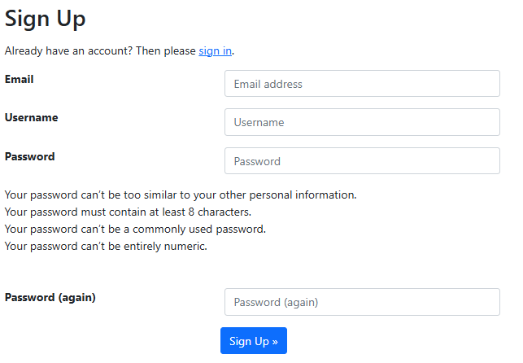
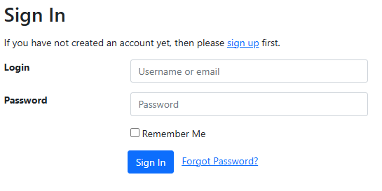
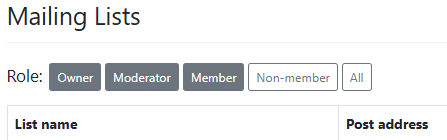

Create an account
In order to access all of the functions of the mailing lists, including changing your preferences, unsubscribing, or performing list moderation/ownership tasks, you will need to create an account.
Signing up
From the ICOS Mailing Lists home page, click on the Sign up link in the upper right corner of the screen. Fill out the form by providing your email address, a username, and a password, and then click Sign Up.

Note
We recommend signing up using the same email address you use for other ICOS-related business. If your email address changes, you can update the email address you are using by logging into the home page.
After signing up, you will receive a confirmation email to the email address you entered. Click on the link contained within the email, and then click on the Confirm button.
Now, from the mailing lists home page, click on the Sign In link in the upper right corner of the screen. Provide your username or email, as well as your password, and click Sign In.

Note
You can use the Forgot Password? link on this page to reset your password, as long as you have access to the email account you used to set up your account.
After signing in
You will now be presented with a table displaying all o fthe lists in which you are an owner, moderator, or member., in addition to lists to which you have access as member, moderator or owner. You can select a role using the buttons to the right of the word Role: in order to filter the list, allowing you to display the lists for which you are an Owner, Moderator, Member, or Non-member, in addition to being able to display all lists.
